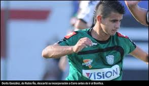

Inicios en Paraguay
Derlis González comenzó su carrera futbolística en Paraguay, destacándose en la liga local con el Club Rubio Ñu...
Leer másDerlis González comenzó su carrera futbolística en Paraguay, destacándose en la liga local con el Club Rubio Ñu...
Leer másDespués de su paso por el Club Rubio Ñu, Derlis González continuó su carrera en uno de los clubes más grandes de Paraguay, el Club Olimpia. Aquí, dejó una huella importante en el fútbol paraguayo...
Leer más
Durante su tiempo en el club brasileño, el atacante paraguayo jugó como extremo, mostrando destellos de su habilidad y velocidad en el campo...
Leer másDerlis González ha sido una pieza clave en la selección de Paraguay, participando en importantes competencias internacionales...
Leer más